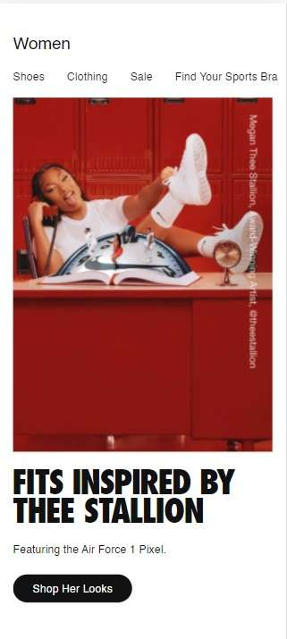

Design Principles
Lexi Carver
Visual Hierarchy
Click Funnels
clickfunnels.comClick funnels does a great job at displaying visual hierarchy because it highlights the most import information first, and then slowly works its way to less important information. For example, the first text your eye is drawn to is "Sales Funnels", which lets you know what the page is about. Then your eye goes to "quickly create", so you know the main purpose of this page is to quickly create sales funnels. As your eye continues to disect the page, you gain a little more information as you go in order of importance.
Contrast
Nike
nike.com Black. White. Red. Bold text. Light text. All of these elements are what proclaim, "contrast" on Nike's website. They include bright, dark colors on a light background and combine big, bold text with thinner, smaller text. Your eye knows where to go, because the layout is also clean and simple, plus Nike uses contrast to tell you where to click and focus on the page as well.
Hick's Law
Love Olive Co
loveoliveco.comWhenever you land on a clothing store's website, it tends to be flooded with so many options that you don't really know what to do with yourself. With Love Olive's website, however, they neatly break out the different types of clothing into different sections like tops, dresses, bottoms, etc. This exemplifies Hick's law, because it limits a user's choices to a few categories vs. all the available products in the store. From a users perspective, this is great because it speeds up their decision making time and makes things easier to find for them.